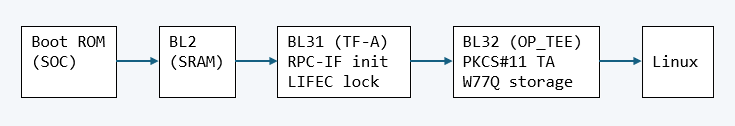

W77Q/T PKCS#11 Secure Storage
Release User Guide — Renesas R-Car V4H Sparrow Hawk
The complete data path from a Linux application down to the W77Q/T secure flash chip:
| Layer | Description |
|---|---|
| PKCS#11 API | libckteec.so — client library that marshals PKCS#11 calls into OP-TEE TEE Client API invocations |
| PKCS#11 TA | Upstream OP-TEE Trusted Application — manages tokens, sessions, keys, crypto operations |
| tee_lfs_storage.c + w77q_lfs_port.c | LittleFS storage backend with authenticated flash I/O via QLIB, mount/format-on-first-boot, power-fail-safe metadata updates |
| w77q_qlib.c | QLIB session wrapper — InitLib → Connect → LoadKey → OpenSession; exposes read/write/erase |
| QLIB (libqlib.a) | Winbond prebuilt library — manages authenticated SPI sessions, key derivation, secure commands |
| qlib_platform.c | Board-specific SPI driver — R-Car V4H RPC-IF register-level transfers + OP-TEE crypto callbacks |
| W77Q/T chip | Hardware secure NOR flash — enforces section access policies, monotonic counters, OTP keys |

| Stage | Name | Stored On | Runs In | Primary Goal |
|---|---|---|---|---|
| 1 | Boot ROM | SoC Hardware | CPU Cache | Find & load BL2 from Flash |
| 2 | BL2 | W77Q/T Flash | Internal SRAM | Initialize DDR (RAM) |
| 3 | BL31 | W77Q/T Flash | DDR (RAM) | Runtime Services (Secure) — RPC-IF init, LIFEC lock |
| 4 | BL32 | W77Q/T Flash | DDR (RAM) | Secure OS (OP-TEE) — PKCS#11 TA, W77Q/T storage |
| 5 | BL33 | W77Q/T Flash | DDR (RAM) | U-Boot → Load Linux from SD card |
0xE611007C bit 22 to prevent Normal World (Linux) from accessing the
RPC-IF SPI controller. All flash I/O must go through OP-TEE after this point.
Block size tip: For deployments with 20–50 PKCS#11 objects,
setting W77Q_LFS_BLOCK_SIZE = 8192U in w77q_lfs_port.h
reduces flash erase operations by up to 4× compared to the default 4 KB block.
Outside that range the default 4 KB block is more efficient.
Note that changing block size requires a storage reformat (all objects are lost).